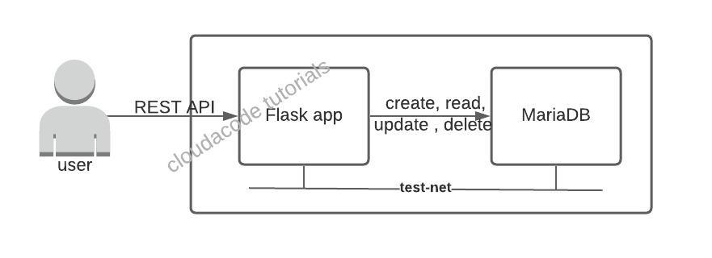

A Simple REST Flask APP with MariaDB Container
In this tutorial, you will learn how to build a Flask web application and implement the app with database(MariaDB). using postman to test basic REST APIs(HTTP methods: GET, POST, DELETE).
Flask로 Web App을 개발을 하고 데이터베이스와 연동을 하는 방법을 알아본다. CURL을 사용 하여 기본적인 REST API(HTTP methods: GET, POST, DELETE)를 테스트 해본다.
Time to Complete: 1-2 hours
Tutorial Prereqs:
- Download stable POSTMAN
- Python 3.x
-
Python Library requirement.txt
flask pymysql flask_table flask-mysql -
Download stable Docker
Architecture

1. Create a container test network
docker network create test-net
test-net is newly created docker network for this tutorial (other than bridge as the default network)
2. Provision a DB container
Start predefined mariadb container
docker run -p 3306:3306 --name my-mariadb --net test-net -d cloudacode/simple-mariadb:latest
dockerfile of the cloudacode/mariadb: simple-mariadb-container
Note
If you want to setup the database by yourself, please follow below guideline.
(Optional) Start a mariadb instance from scratch
Deploy new MariaDB container
docker run -p 3306:3306 --name my-mariadb --net test-net \
-e MYSQL_ROOT_PASSWORD=mysecret -e MYSQL_DATABASE=cloud_user \
-d mariadb:latest
Note
mariadb official repo: https://hub.docker.com/_/mariadb
Initalize the database
connect to db container and database
docker exec -it my-mariadb /bin/bash
If you can see root@b51599196adf:/# in your terminal, it means you are in the container.
login the database via mysql client and initialize the database
mysql -uroot -pmysecret
MariaDB [(none)]> use cloud_user;
Database changed
MariaDB [cloud_user]>
MariaDB [cloud_user]> CREATE TABLE IF NOT EXISTS `cloud_user` (
`user_id` bigint NOT NULL AUTO_INCREMENT,
`user_name` varchar(45) DEFAULT NULL,
`user_email` varchar(45) DEFAULT NULL,
`user_bio` varchar(255) DEFAULT NULL,
PRIMARY KEY (`user_id`)
) ENGINE=InnoDB AUTO_INCREMENT=2 DEFAULT CHARSET=utf8 ;
Query OK, 0 rows affected, 1 warning (0.001 sec)
MariaDB [cloud_user]> select * from cloud_user;
Empty set (0.001 sec)
MariaDB [cloud_user]> INSERT INTO `cloud_user` (
`user_id`,`user_name`,`user_email`, `user_bio`)
values
(1,'kc chang','cloudacode@gmail.com', 'mento');
Query OK, 1 row affected (0.001 sec)
MariaDB [cloud_user]>
MariaDB [cloud_user]> select * from cloud_user;
+---------+-----------+----------------------+----------+
| user_id | user_name | user_email | user_bio |
+---------+-----------+----------------------+----------+
| 1 | kc chang | cloudacode@gmail.com | mento |
+---------+-----------+----------------------+----------+
1 row in set (0.000 sec)
3. Build the Flask app
to run the flask app in your local environment, you should build the flask app first.
source code: cloudacode/coolstuff.git
git clone https://github.com/cloudacode/coolstuff.git
cd flask-example/simple-flask-app
docker build -t cloudacode/simple-flask-app:latest .
Note
you can change the cloudacode to your dockerhub repo name
4. Run the Flask app
Run the flask app on your localhost or dev machine
docker run -p 8888:5000 --net test-net \
-e DB_USER=root -e DB_PASSWORD=mysecret -e DB_NAME=cloud_user -e DB_HOST=simple-mariadb \
cloudacode/simple-flask-app:latest
OR
docker run -p 8888:5000 --net test-net \
--env-file ./env.list cloudacode/simple-flask-app:latest
Note
If you are using your own password or database name, you need to replace the vaule in the env.list file
5. Test API request
get date from the server. you can also use the web browser to get the date
curl localhost:8888/user
review the output. here is the expected output message
[
{
"user_bio": "mento",
"user_email": "cloudacode@gmail.com",
"user_id": 1,
"user_name": "kc chang"
}
]
post Json data to the server
curl --header "Content-Type: application/json" \
--request POST \
--data '{"bio": "test user", "email": "test1@cloudacode.com", "name": "test1"}' \
http://localhost:8888/add
get the user list again from the server
curl localhost:8888/user
6. Docker Compose
Install Docker Compose: link
version: "2"
services:
simple-mariadb:
image: cloudacode/simple-mariadb:latest
ports:
- "3306:3306"
simple-flask-app:
links:
- simple-mariadb
image: cloudacode/simple-flask-app:latest
ports:
- "8888:5000"
environment:
- DB_USER=root
- DB_PASSWORD=mysecret
- DB_NAME=cloud_user
- DB_HOST=simple-mariadb
docker-compose.yaml
Run docker compose to up all containers
docker-compose up -d
🎉 Congratulations, you have completed Flask, MariaDB integration tutorial